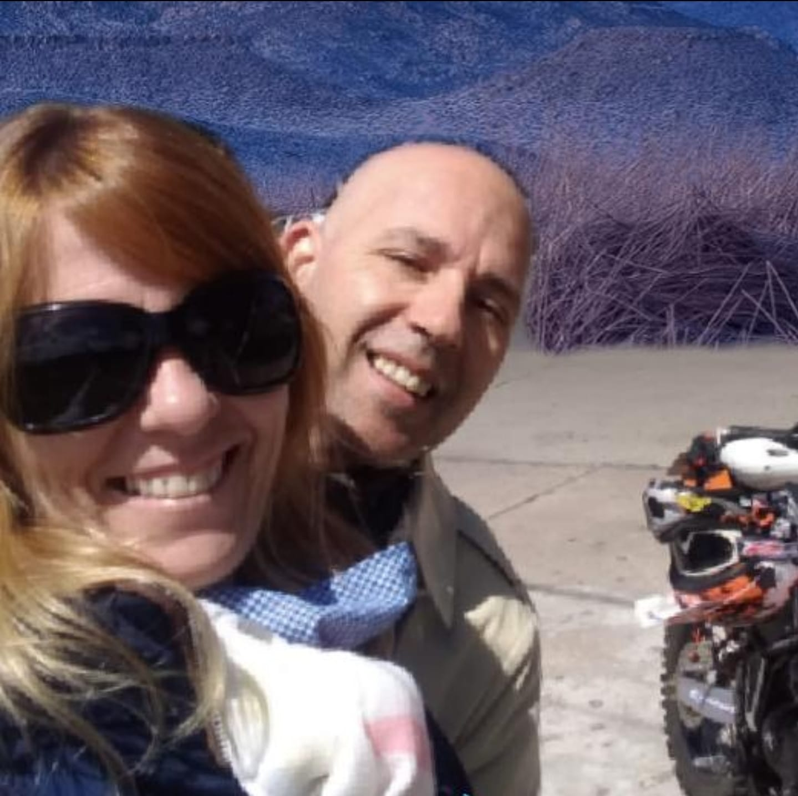

Quienes Somos?
En Atria Mapping creemos en un principio rector simple pero importante: el cliente es lo primero.
Ya sea que seas un académico, un ingeniero, un entusiasta de los mapas o un propietario de negocios, creemos que Atria Mapping es la opción clara para todas tus necesidades geoespaciales, de teledetección y de mapeo.
Nos asociamos con proveedores líderes de imágenes y compañías de información de tierras como DigitalGlobe, Airbus, RapidEye e ImageSat para ofrecerte los datos más precisos y de alta calidad posible. Para demostrarlo, hemos recibido múltiples premios, incluyendo el Mejor Nuevo Revendedor de DigitalGlobe para 2012, la Mayor Cantidad de Pedidos Airbus Geostore para 2013, el Crecimiento en Ventas de DigitalGlobe en 2013 y 2014, y las Ventas Regionales Más Altas de Maxar en 2017.
Nuestra red profesional y experiencia en la industria nos permite obtener los múltiples conjuntos de datos que necesitas para completar proyectos a tiempo y dentro del presupuesto. Y cuando surgen complejidades geoespaciales, incluyendo requisitos de datos topográficos, servicios de alojamiento y transmisión y tecnologías geoespaciales especializadas, creamos soluciones geoespaciales personalizadas que abordan los desafíos de tu organización. Por todo esto somos la mejor opcion para tu negocio, somos Atria Mapping!
Franco Lacamoire
Fundador y CEO
Franco es el Presidente, Cofundador y CEO de Atria Mapping. Es un científico convertido en emprendedor con amplia experiencia en la construcción y liderazgo de equipos en el espacio tecnológico, primero en NASA y ahora en Atria Mapping, habiendo hecho crecer el equipo desde un garaje hasta convertirse en una empresa pública de más de 800 personas. Supervisa la visión, el producto y la estrategia empresarial, llevando a cabo la misión de Atria Mapping, tal como se establece en la Carta de Corporación de Beneficio Público, para acelerar la humanidad hacia un mundo más sostenible y seguro. Franco fue reconocido como Joven Líder Global por el Foro Económico Mundial y forma parte del consejo de la Open Lunar Foundation
Cristian Manicable
Director de Estrategia

Cristian lidera la trayectoria estratégica a largo plazo de la compañía y supervisa las funciones de Sistemas Espaciales, Desarrollo Corporativo y Proyectos Especiales de Atria Mapping. Lideró la adquisición de BlackBridge en 2015, Boundless en 2019 y VanderSat en 2021. Antes de unirse a Atria, Crsitian pasó 9 años en la NASA, donde ayudó a construir la Oficina de Pequeñas Naves Espaciales en el Centro de Investigación Ames y fue Jefe de Personal de la Oficina de Tecnologías Principales en la Sede de la NASA. Obtuvo un MBA de la Universidad de Georgetown, una maestría en Estudios Espaciales de la Universidad Espacial Internacional y una licenciatura en Física de Ingeniería de la Universidad de Santa Clara
Martin Estofan
Director de Operaciones
Martin se desempeña como Presidente de Productos y Negocios en Atria Mapping desde abril de 2021. Anteriormente, fue Vicepresidente de Productos en Novi (una subsidiaria de Facebook) desde mayo de 2018 hasta abril de 2021. Antes de eso, fue Vicepresidente de Productos en Instagram desde marzo de 2016 hasta mayo de 2018 y ocupó varios cargos en Twitter desde septiembre de 2009 hasta febrero de 2016, siendo el más reciente Vicepresidente Senior de Productos. Martin tiene una licenciatura en Física y Matemáticas de Harvard y una maestría en Física de la Universidad de Stanford.